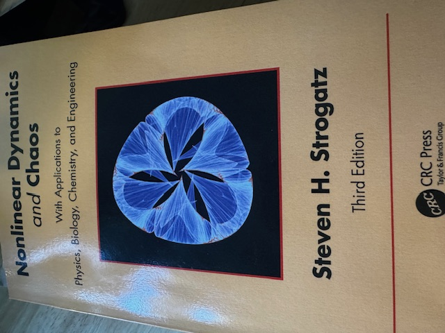
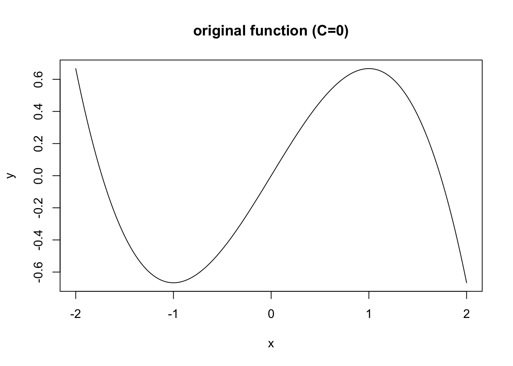
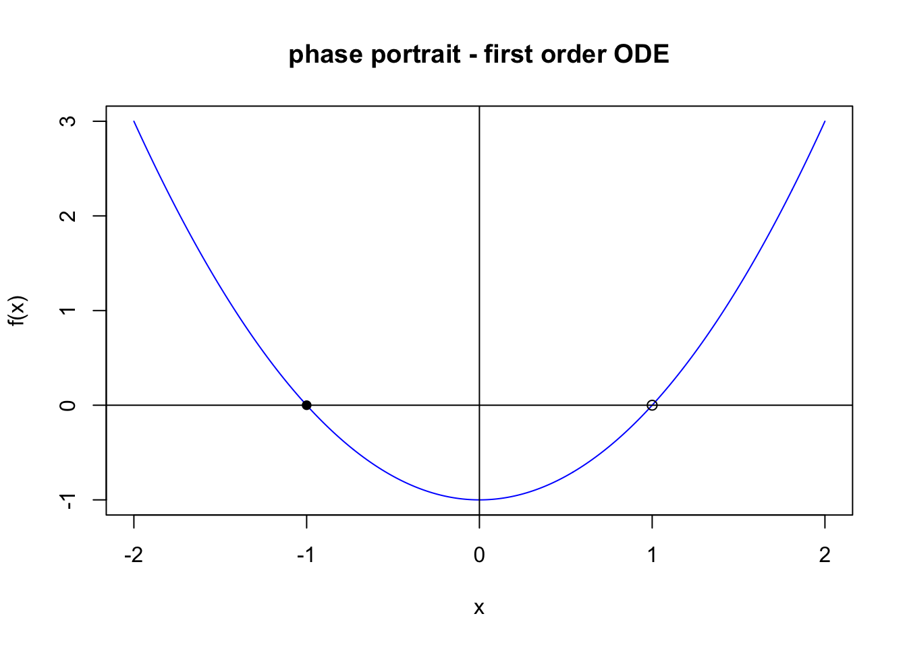
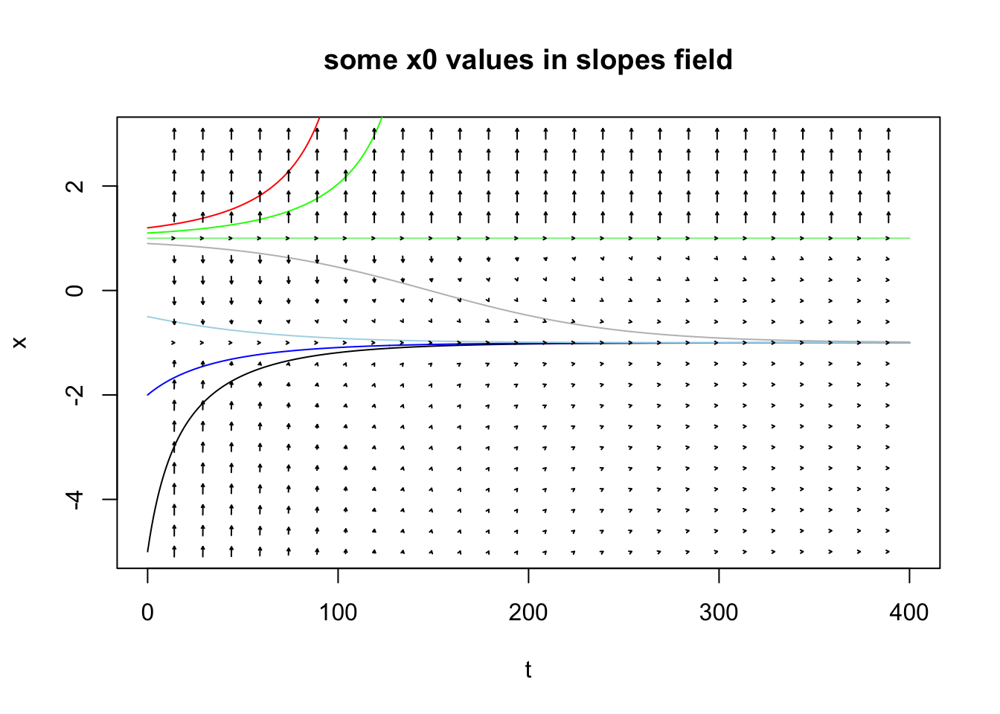
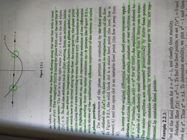

I really want to understand…
Math. More specifically, Ordinary Differential Equations. More specifically, in fact, probably things related with evolution in time. Although not only.
I just want to really understand mathematical models used for simulating things.
And ODEs are just the thing.
Physics, Chemistry, etc. maybe are beyond the point. Simulating interactions of… Well, agents, that’s what got me curious. Or populations growth (i.e. the Logistic Model…). That kind of things.
Anyhow, that’s the why for today’s post.
The book
I have done exercises about ODE in the past, but being able to follow the math, and being able to understand the math, are, to me, two different things. My goal here is to understand, not just copy and paste.
After reading some comments online, I came across this book, highly recommended in its approach to the topic:

“Day 1”
Actually, Day 2. Day 1, I went through Chapter 1 (Overview) which confirmed this looked promising.
So Day 2. Chapter 2. Well, that took me the whole day, yesterday. And a hard day of thinking about the math, too. And that didn’t even include none of the whole section of exercises, either. But no one said it would be easy, hu?
So I did go through the whole theory of the chapter in the end, but in the middle, I made a detour of sorts, when reaching “example 2.2.1”. This was the provided information:
\[ \dot{x} = x^2-1 \]
That seemed innocuous enough, right? You would look for roots, fair enough: (-1, 1). Then where \(\dot{x} > 0\), you know the “flow” will move to the right, and to the left when negative, so you can draw the vector field.
Obviating the “arrows” of the vector field, I just put a “full dot” for stable equilibrium, and “empty dot” for unstable equilibrium.
It looks like so (and that was not the part that got me stumbling). One thing I did, is code the whole thing (in R, obviously) and so here I am generating a phase portrait for that scenario:
But then something came up. See, one argument of the methods presented in the book (thus far, anyway) is to get a “geometric” sense of what happens with nonlinear equations that are hard to solve analytically.
This one example ODE was easy to “integrate”, so I could visualize the “potential function” that leads to this. That’s where I made a conceptual mistake that got me wondering what was wrong…
Just integrate?
Well, if you integrate the above, you get:
\[f(x) = x^3/3-x+C\]
But when you draw that, you get quite exactly the opposite of what you’d expect. Why? Why is it, when I integrate the ODE directly, I get the opposite function of what I’d expect?
I could see that what you want for this example, what fits nicely with the ODE, is in fact the following:

That is the same thing, but multiplied by -1.
The Key
“A first order ODE can be understood as gradient descent of its potential function.”
That’s what clicked for me and fixed a conceptual problem that got me worried for… Hours? Until I asked a friend (thanks Omar) and at long last, it all made sense.
So here is the concept of the whole exercise. Let’s go back and go step-by-step. So, again, this:
draw_phase_portrait(dot_x, x_min, x_max)
How I can make an intuition of that phase portrait and the vector field for it is:
With the passing of time:
a particle ‘landing’ near x=-1 will tend to move towards, and then stay, at x=-1.
a particle ‘landing’ between x=-1 and x=1 will tend to go to the left until it stabilizes at x=-1.
a particle ‘landing’ on the right of x=1 will move away from 1, and it will move ever faster.
a particle ‘landing’ precisely at x=1 will stay there, but any perturbation to it, however small, will push it away from that “equilibrium”.
I could see that here: The concept I understand is, if you consider some sort of a particle (ball? flow? no matter) that falls vertically onto this next curve, see below (which you have to imagine is “covered in some dense fluid, say honey or similar”, thereby eliminating the possibility of overshooting a stable equilibrium because of previous horizontal inertia…), it will indeed behave as described above, right?
plot(orig_points, type="l", main="original function (C=0)")Right? Now I had missed a step in the logic of the ODE. Because what I just described is the “gradient descent”.
Heck! But I know that one! Why could I not “see” the solution?
Gradient descent is, by definition, the negated derivative!!
So if I am given:
\[ \dot{x} = x^2-1 \]
I should have known (!!) that the potential function corresponding to that ODE, the one that negates the gradient hereby represented, is in fact:
\[ \int -(x^2-1) = -(x^3/3-x+C) \]
That was ALL I needed to understand to see where I had made a (conceptual) mistake.
And it finally clicked when that friend gave me that key. Sometimes, you need help. I’m just glad I know a few people that can answer such questions.
Edit: I also keep getting confused by trying to “solve the ODE” and getting to the potential function.
Here is the clarification I need to keep in mind, for first order ODE.
Solving the ODE analytically means solving:
\[ \dot{x} = f(x) = dx/dt \rightarrow\int{{1\over{f(x)}} dx}=\int{dt} \]
Which should lead to an expression \(x(t)\), which is related to \(t\) for a specifically given \(x(0)\).
Whereas the potential function is given by:
\[ \dot{x} = f(x) = {-dV\over{}dx} \]
Which is where one can “see” the negative of the derivative… Which was the gradient descent all along. I just didn’t grab the distinction :(
Actually, that also makes it clear that “solving” analytically what looked like a simple ODE is in fact a real pain… And why one would prefer to use geometric approaches.
Anyhow, I’m still not 100% clear on what the “solving analytically the ODE” means: I can understand how the first order ODE itself expresses a change over time for a given initial condition. Which is why I can understand the next section. But I guess I still need to wrap my head conceptually around what “solving it” means.
Slopes Field
On to the last piece of the puzzle, visualizing the “field” of that equation.
One “cool thing” about this whole concept is you can visualize “all” initial positions and effect of the passing of time for the above “potential” equation, that is, all the possible behaviours of a “particle falling onto the curve”. That’s called a slopes field.
And you only need the ODE (here, first order) for that!
The only real difficulty I had there was to draw the “arrows”. I know it shows the “slopes” at some given points. Which, well, is the definition of the derivative, so yes, the ODE is the key. As per each \(x0\), that’s easy too. And generating the positions over time, well…
I used the (simple, far from ideal but sufficient for today) Euler method for getting a numerical solution for each \(x0\), iterating with small \(\Delta t\). Then I extract a subset of each possible \(t\) positions, and thereby space a bit the arrows so that it can be visualized.
One thing I still don’t quite understand: the cos, tan, and all that trigonometry stuff required to draw the arrows. So yeah, I’ll admit: I just copied that part of the code from here.
Aside from that slight difficulty of the drawing of the arrows, I’m quite happy with the outcome!

You can see what the vector field predicted!
This makes me happy
At long last, I have a conceptual understanding of what a given (simple, first order) ODE represents, in a mathematical sense, but also as an intuition.
This book, I will say, is very promising… But it’s also very dense with concepts to be understood. Here is me “reading” chapter 2:


Conclusions
Well, that was… Challenging.
At the rythm of one full day of work per chapter, just to read the theory, and 13 such chapters, notwithstanding that doing some exercises might very well add another day or two for each of the chapters (at least), and considering this is not something I can do on a workday (no way, this requires waaaaay too much focus of me), so considering one such effective day per week, we’re looking at… 26 weeks, at best?
Half a year. For this one book.
And that is, if I keep the focus on that one book (that’s something I do wrong: I jump from book to book, all the time. Too many interesting things to learn, what can I say…)
I should really consider reading short novels, instead :D
On the other hand: The satisfaction of getting the intuition behind the math is incredibly fulfilling. So maybe it’s worth it, after all…
References
“Nonlinear Dynamics and Chaos (…)”, by S. Strogatz (CRC Press)
Drawing the Slopes Field, I was initially not sure about how to draw the arrows, this helped.